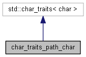

A variation of std::char_traits for characters in a path name.
More...
#include <PathName.h>
Inheritance diagram for char_traits_path_char:

Collaboration diagram for char_traits_path_char:

Static Public Member Functions | |
| static bool | is_slash (char c) |
Returns true if the character is a slash or backslash. More... | |
Overrides char_traits<char> | |
| static bool __cdecl | eq (char _Left, char _Right) |
| static bool __cdecl | lt (char _Left, char _Right) |
| static bool __cdecl | eq_int_type (const int_type &_Left, const int_type &_Right) |
| static int __cdecl | compare (const char *_First1, const char *_First2, size_t _Count) |
| static const char *__cdecl | find (const char *_First, size_t _Count, char _Ch) |
Detailed Description
A variation of std::char_traits for characters in a path name.
The difference between these traits and std::char_traits< char > is that comparisons are case-independent, and '\' and '/' are equivalent. This struct is used by the class PathName
Member Function Documentation
◆ is_slash()
|
static |
Returns true if the character is a slash or backslash.
- Parameters
-
c character to test
The documentation for this struct was generated from the following file: